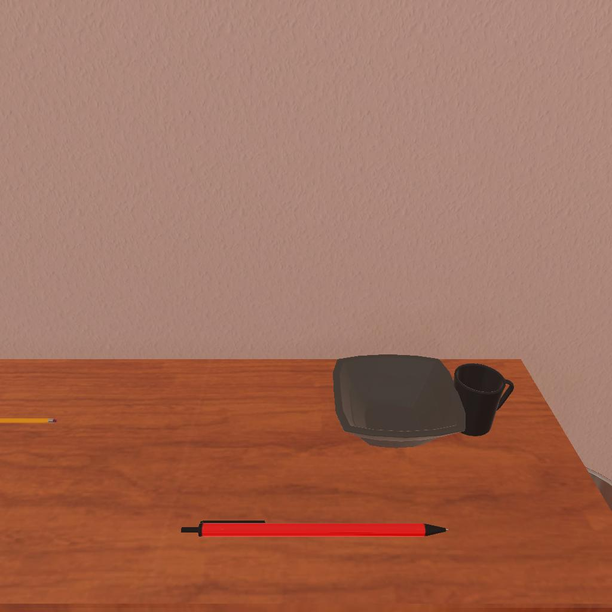

---------------------------------------------------------task: 2---------------------------------------------------------
--------------------------------------------------------------------------------------------------------------------------------------------------------------------
--------------------------------------------------------------------------------------------------------------------------------------------------------------------
Step:--------------------------------------------------------------------------8-------------------------------------------------------------------------------
----------------------------------------
VLM Prompt:
**Task**
Please perform as an embodied AI agent. Our final objective is to examine the pen with the desklamp. Below is the plan for completing the task, the current observation, alongside historical data and admissible actions for the next step. Please determine the best action for the next step!
**Plan**
Below is a detailed step-by-step plan to complete the task.
1. Find a pen.
2. Pick up the pen.
3. Find a desklamp.
4. Turn on the desklamp.
5. Examine the pen under the light of the desklamp.
**Current Observation**
Displayed is an image capturing the current position of the agent.
**History Information**
Displayed are the previous observations with their corresponding actions.
State 0:
No history.
State 1:
1. Step Index in the Plan: 1
2. Objects: Sidetable, Pink Object (potential bedding)
3. Action: go to desk 1
State 2:
1. Step Index in the Plan: Unknown (presumably following "find a pen" step)
2. Objects: Desk, Pencil, Mug
3. Action: go to drawer 1
State 3:
1. Step Index in the Plan: 2
2. Objects: Sidetable, Digital Clock
3. Action: open drawer 1
State 4:
1. Step Index in the Plan: 2
2. Objects: Sidetable, Digital Clock, Drawer (open), Alarm Clock, Pen (inside drawer)
3. Action: take pen 1 from drawer 1
State 5:
1. Step Index in the Plan: 5
2. Objects: Sidetable, Digital Clock, Drawer (open)
3. Action: go to dresser 1
State 6:
5. Step Index in the Plan: 5
6. Objects: Desk, Safe, Smartphones, Mug, Pen
7. Action: go to sidetable 1
State 7:
1. Step Index in the Plan: 5
2. Objects: Pen, Desk/Sidetable
3. Action: examine pen 1
State 8:
1. Step Index in the Plan: Current step is to examine the pen under the desklamp light.
2. Objects: Pen, Desklamp (not visible), Surface (where the pen is placed).
3. Action: go to desk 1
**Admissible Actions**
(1): go to bed 1
(2): go to dresser 1
(3): go to bed 2
(4): go to drawer 1
(5): go to drawer 2
(6): go to sidetable 2
(7): go to drawer 3
(8): go to drawer 4
(9): go to garbagecan 1
(10): go to drawer 5
(11): go to drawer 6
(12): go to drawer 7
(13): go to drawer 8
(14): go to drawer 9
(15): go to drawer 10
(16): go to drawer 11
(17): go to safe 1
(18): put pen 1 in/on desk 1
**Analysis Guideline**
1. Analyze the history and current observation, and then determine our current step in the plan and our current place.
2. List all visible objects related to the task in the current observation, without summarizing any as "various items."
3. Analyze the objects in the current observation based on the history and the requirements for the current step, and then determine if we can complete the step with the current observation.
4. Analyze and decide on the most appropriate action to take.
5. Summarize the analysis using the following format: "Analysis: [The summarization of the analysis], The Most Appropriate Action: (i which is the integer.): [Selected action]"
**Notes**
1. We must complete each step of the plan in order and cannot skip steps when the previous ones are not finished.
2. For "Go to" actions listed as "go to xxx [n]", interpret this as there are n distinct actions available: "go to xxx 1", "go to xxx 2", ..., "go to xxx n". Select one specific action from these options instead of using "go to xxx [n]".
3. If receptacles such as drawers, cabinets, and so forth are closed in the current observation, we may try to open them.
4. Pay attention to synonyms and ensure clarity in the terms used.
5. We must determine and provide the single action which must be in the **Admissible Actions**.
6. If there is no history available, we are at the first step and the current place is "Unknown".
**Answer**
Please select the most suitable action by following the **Analysis Guideline**, keeping the above **Notes** in mind.
----------------------------------------
----------------------------------------
VLM Response:
Analysis: In the current observation, we are at the desk where we previously examined the pen, which aligns with our last known step in the plan (step 5: examine the pen under the light of the desklamp). The objects visible on the desk are a pen, a pencil, a mug, and a cap. However, the desklamp is not visible in the current observation, and the plan requires us to examine the pen under the light of a desklamp. Since the desklamp is not in the frame, we cannot complete the current step with the current observation. Therefore, we must perform an action that will allow us to find the desklamp. None of the admissible actions directly mention a desklamp or a light source; however, since we are currently at the desk, the next logical action would be to explore nearby furniture that might have a desklamp on it. Among the admissible actions, going to the dresser could be a reasonable choice, as dressers are often in the same room as desks and might have a desklamp on them or nearby.
The Most Appropriate Action: (2): go to dresser 1
----------------------------------------
----------------------------------------
>>> Refine VLM Response and Get Pure Action: go to dresser 1
----------------------------------------
-----------------------------------------------------------------
Running time: 17.972742795944214 seconds
Total Money: 0
-----------------------------------------------------------------
-----------------------------------------------------------------
Summarization Prompt:
**Context**
Analysis: Since there is no history information, we are at the first step in the plan, which is to find a statue. The current place is unknown. In the current observation, we see a floorlamp next to an armchair with a small table that has a small object on it, which could potentially be the statue we are looking for. Since the plan requires us to find a statue first and it appears there might be one on the table next to the armchair, we should investigate this object to determine if it is the statue we need.
The Most Appropriate Action: (1): go to armchair 1
**Summary**
1. Step Index in the Plan: 1
2. Objects: Floorlamp, Armchair, Small Table, Small Object (potential statue)
3. Action: go to armchair 1
**Context**
Analysis: In the current observation, we are at the desk where we previously examined the pen, which aligns with our last known step in the plan (step 5: examine the pen under the light of the desklamp). The objects visible on the desk are a pen, a pencil, a mug, and a cap. However, the desklamp is not visible in the current observation, and the plan requires us to examine the pen under the light of a desklamp. Since the desklamp is not in the frame, we cannot complete the current step with the current observation. Therefore, we must perform an action that will allow us to find the desklamp. None of the admissible actions directly mention a desklamp or a light source; however, since we are currently at the desk, the next logical action would be to explore nearby furniture that might have a desklamp on it. Among the admissible actions, going to the dresser could be a reasonable choice, as dressers are often in the same room as desks and might have a desklamp on them or nearby.
The Most Appropriate Action: (2): go to dresser 1
Please summarize the context by following above examples when providing the summary, and ensure that only the summary is included, without any extra explanation.
**Summary**
-----------------------------------------------------------------
-----------------------------------------------------------------
Summarization Response:
1. Step Index in the Plan: 5
2. Objects: Desk, Pen, Pencil, Mug, Cap
3. Action: go to dresser 1
-----------------------------------------------------------------
-----------------------------------------------------------------
Text Observation:You arrive at loc 1. On the dresser 1, you see a mug 2, a cellphone 1, a cellphone 2, and a creditcard 1.
-----------------------------------------------------------------
UNSUCCEED